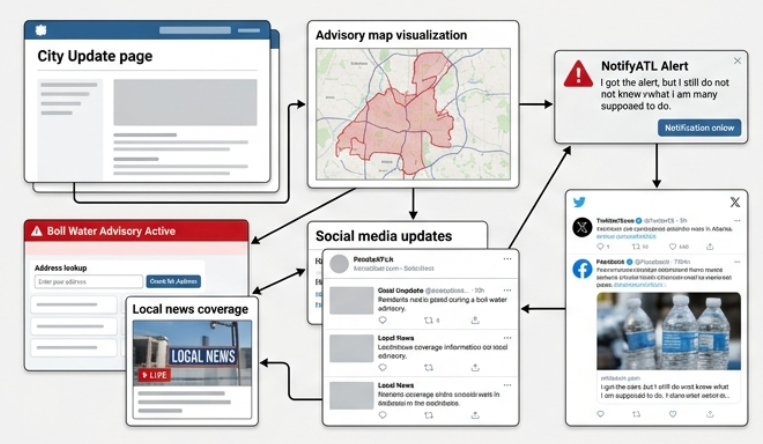

Communication gap
People need one reliable place to look
During an emergency, residents should not have to jump between alert texts, city webpages, social media posts, and maps just to find the right instructions.
Public health communication for Atlanta
Atlanta WaterReady is a public-facing response plan for future water emergencies. Instead of forcing residents to piece together alerts, maps, and scattered updates, the city could provide one clear communication hub with address-based guidance, practical instructions, and bottled water access information.

During an emergency, residents should not have to jump between alert texts, city webpages, social media posts, and maps just to find the right instructions.
Drinking, cooking, brushing teeth, infant formula preparation, and medically sensitive households all depend on fast and understandable guidance.
Older adults, homebound residents, low-income families, and people with limited English proficiency are hit hardest when communication is delayed or fragmented.
The problem
When a major water main break or pump station failure causes low pressure, the question is not only whether the system can be repaired. Residents also need immediate answers about whether their address is affected, whether tap water is safe to use, and what protective actions they should take right away.
Atlanta’s 2024 disruptions showed how easily emergency information can become scattered across multiple channels. Even when official updates exist, people may still feel uncertain if they have to search through separate pages to understand boundaries, timelines, and bottled water access.

Why it matters
People need direct answers about whether they should switch to bottled water, boil tap water first, or avoid normal use altogether.
Families with infants and medically fragile residents carry a greater burden when instructions are unclear or hard to find.
Residents are more likely to follow public health guidance when one visible, consistent source explains what to do and when the next update will arrive.
Before and after

In the fragmented model, alerts may point people to separate webpages, maps, or social posts. A warning exists, but the next steps still require searching and interpretation.
Proposed solutions
The first recommendation is a single public webpage connected to NotifyATL, ATL311, and official city updates. Residents should be able to check whether their address is affected and quickly see the most important action steps.
The second recommendation is a preplanned bottled water network for vulnerable residents and facilities. Instead of responding reactively, the city could identify pickup sites, outreach partners, and responsibilities ahead of time.
What the webpage should do
A good emergency page should do more than announce that an advisory exists. It should reduce uncertainty, guide action, and keep residents from guessing.
Residents should be directed to use bottled water or boiled water until official guidance says normal use is safe again.
The page should explain these high-risk uses in simple language because they are some of the most urgent household questions.
The proposed hub includes an address lookup tool so people do not have to interpret maps by themselves.
The page should prominently list bottled water pickup locations and partner support channels for residents who need alternatives.
The proposal frames this as a modest preparedness investment rather than a full infrastructure repair budget.
Embedded poster
On the webpage, the poster becomes the fast overview. The surrounding sections give it more context, explain the reasoning behind the recommendations, and make the message easier for a broader audience to follow.

Call to action
Atlanta WaterReady asks city leaders and community partners to centralize public guidance, plan bottled water access ahead of time, and make emergency response easier to understand for every resident.
Selected sources